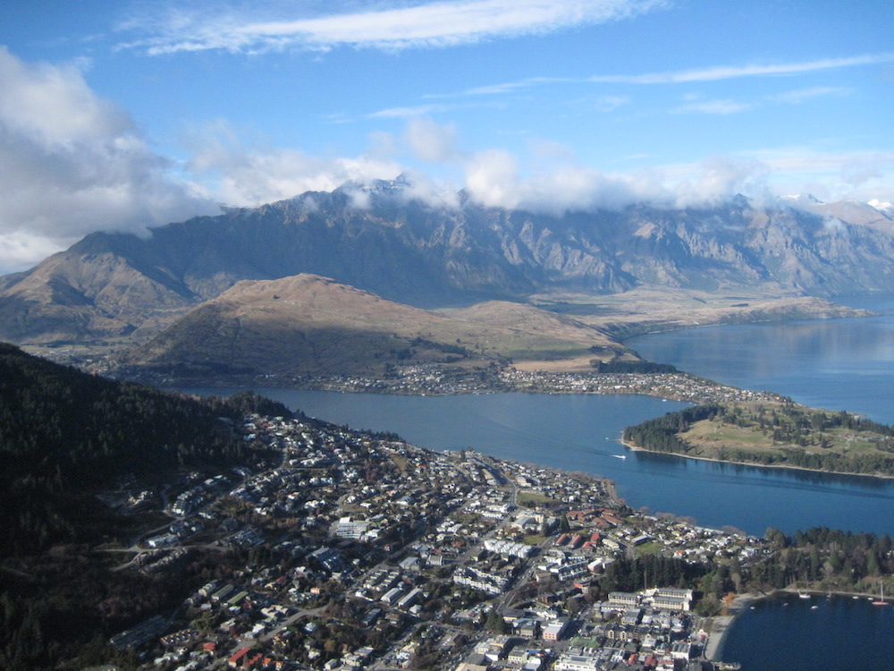
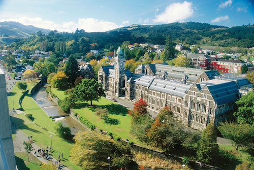

anzsup 2015
Australian and New Zealand School in Ultracold Physics

Australian and New Zealand School in Ultracold Physics
The Australian and New Zealand School for Ultracold Physics (ANZSUP) is a two week graduate summer school aimed at Master level and beginning PhD students. In the field of ultra-cold physics it is aimed at providing graduate students with the relevant background in experiments and theory. This year's school will cover topics ranging from laser trapping and cooling of ultra-cold atoms through quantum simulation and open quantum systems, ultra-cold Bose and Fermi gases, optical lattices and many-body systems with disorder, spinor order parameters and long-range interactions, polaritons in semiconductors.
Lecturers from Australasia and further afield will provide mini-courses on a given topic. The list of lecturers for ANZSUP 2015 includes:
David Hutchinson
University of Otago, NZ
Kristian Helmerson
Monash University, AU
Andy Martin
The University of Melbourne, AU
Peter Drummond
Swinburne University, AU
Joachim Brand (chair)
Massey University, NZ

